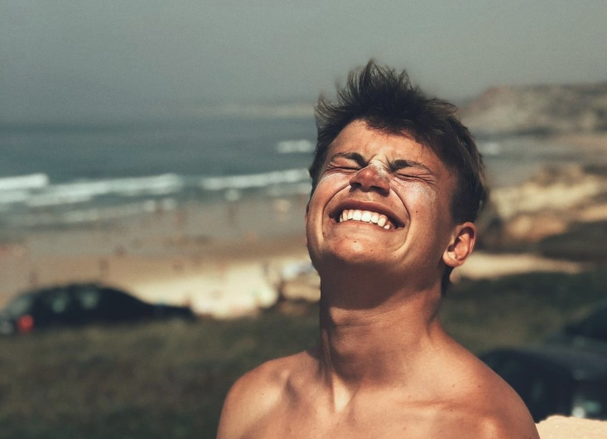

Beck was a passionate musician. There is no sound on this website on purpose. Consider putting on your favourite tracks while looking through these pages and we suggest you’re mindful of your emotions while visiting. Perhaps plan to dance off any heaviness when you leave, or while you’re browsing!!
Beck
2003 — 2022 and beyond
B — Believe in the NOW and trust in the future as I pause and take a moment to look at, listen to, laugh with and love the world around me in the moment.
E — Examine my thoughts with compassion, and accept the things I can’t change while learning how, when and where to ask for help to change the things I can.
C — Convert negative thoughts to positive by holding hands with my companions be they my pen, books, musicians, friends, family or my wider community.
K — Kindness is King as I embrace the silver threads of joy in life and empower others to do the same.

For Beck and his Community
We remember Beck here through stories, photos, and actions taken in his name. Growing over time — shaped with love, by family, friends, and anyone moved to share.
We believe it will help this community have an incredible impact in the world and we’re excited to see how we all guide each other as we choose not to forget Beck’s smile.
We offer meaning to the letters B.E.C.K. in the hope it might help others and inspire us all to lay the foundations for our own paths through life.
Explore and contribute memories in 2003-2022, keep up with projects and gatherings in 2022 and beyond, and find or offer small supports in Silver Threads.
